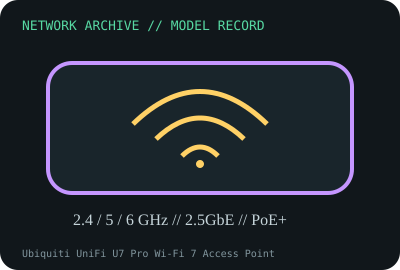

[ MODEL-SPECIFIC NETWORK HARDWARE RECORD ]
Ubiquiti UniFi U7 Pro Wi-Fi 7 Access Point
Tri-band Wi-Fi 7 indoor AP with 2.5GbE uplink and PoE+ power. Specifications are tied to this named product; confirm the physical label, revision and source documentation.

IDENTIFICATION: Verify exact PID/model, revision, label and host support. The catalog separates nominal PHY/link specifications from measured throughput; no benchmark is asserted unless explicitly recorded.
Model-specific specifications and compatibility
| Subcategory | Network appliances: routers, access points & switches |
|---|---|
| Exact product/model | Ubiquiti UniFi U7 Pro Wi-Fi 7 Access Point |
| Bus, ports and physical interface | One 2.5GbE RJ-45 uplink; 802.3at PoE+ input; internal tri-band antennas, ceiling/wall mount. |
| PHY, radio or optical interface | IEEE 802.11be (Wi-Fi 7) tri-band AP. Ubiquiti lists 2.4 GHz 2x2, 5 GHz 2x2 and 6 GHz 2x2 radios; channels/features are subject to regional restrictions and client capabilities. |
| Nominal rate (not measured) | Three radio-band PHY rates are nominal and do not form one client link. 2.5GbE wired uplink is the stated interface maximum; no application throughput is implied. |
| Measured throughput | No throughput measurement is claimed. Test results must specify client Wi-Fi generation, band/channel width, regional domain, PoE, firmware, channel utilization and wired topology. |
| Driver, OS and firmware | UniFi Network application and Ubiquiti firmware manage the AP. Minimum application/firmware and feature support change over time; use current model-specific support notes and release documentation. |
| Platform/media compatibility | Requires 802.3at PoE+, 2.5GbE switch uplink for full wired interface, supported UniFi Network management, and legal 6GHz channels in the installation region. 6GHz requires suitable Wi-Fi 6E/7 clients. |
| Variant warning | U7 Pro is distinct from U7 Pro Max, U7 Pro XG and U6 Pro; verify exact product name, port speed and hardware revision. Regional rules may disable 6GHz or 320MHz channel operation. |
Revision, operation and measurement notes
U7 Pro is distinct from U7 Pro Max, U7 Pro XG and U6 Pro; verify exact product name, port speed and hardware revision. Regional rules may disable 6GHz or 320MHz channel operation.
UniFi Network application and Ubiquiti firmware manage the AP. Minimum application/firmware and feature support change over time; use current model-specific support notes and release documentation.
No throughput measurement is claimed. Test results must specify client Wi-Fi generation, band/channel width, regional domain, PoE, firmware, channel utilization and wired topology.
Archival, ESD and preservation notes
Document serial/MAC, board/revision label, PoE source, firmware and adoption/reset state. Disconnect PoE before handling, avoid touching antenna structures and store dry in ESD-safe packaging.
Retain source provenance and the revision/date of each supporting document. Store public records without credentials, personal information or other secrets.
Primary manufacturer and standards sources
- Ubiquiti UniFi U7 Pro technical specificationsPrimary manufacturer or standards reference; confirm exact part label, revision, and platform qualification.
- Ubiquiti UniFi support and software lifecycle resourcesPrimary manufacturer or standards reference; confirm exact part label, revision, and platform qualification.
- IEEE 802.11 working group standardsPrimary manufacturer or standards reference; confirm exact part label, revision, and platform qualification.
Manufacturer source links are provided for the stated model or exact product family; use the board label and the official revision-specific compatibility list for final qualification.